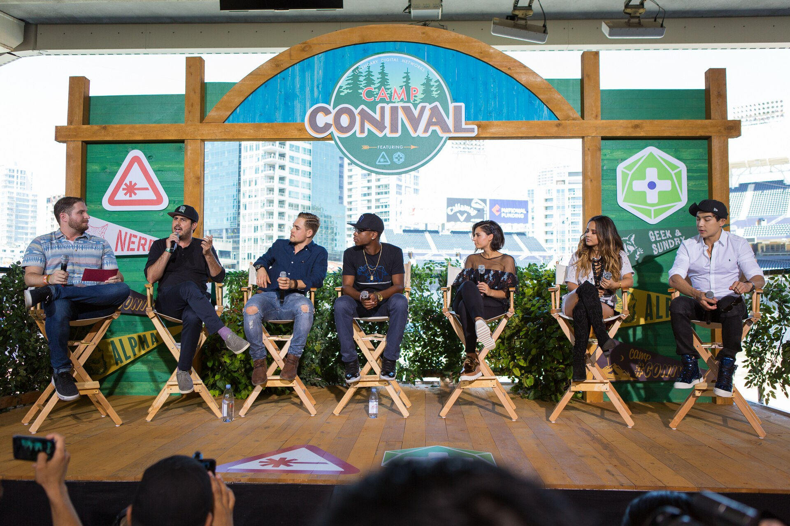

The argument started in a living room, on schedule
A generation of teenagers was handed a television programme about itself and the feedback loop closed. Nobody was in charge. The show was the mirror and the argument was the point.
Moments · the ones that changed the shape of it
Not the news — the news is ten sections away. These are the parasocial events that changed what the thing was, across television, music, the internet, games and AI.
A generation of teenagers was handed a television programme about itself and the feedback loop closed. Nobody was in charge. The show was the mirror and the argument was the point.

The most complete parasocial handover ever broadcast, five days a week, and the audience did it consciously and happily.
Image: iDominick · CC BY-SA 2.0
The most successful piece of parasocial design of the century, drawn by a person with no following, about a person who does not exist, for people who cannot say it out loud.
The largest confirmed instance of many people feeling known by one stranger, in public, on purpose, at enormous scale. It works because she spent a decade being specific about who she was talking to.
The argument about whether this was allowed went on for weeks while people were still doing it. The feeling was real. The debate about the feeling was a different thing entirely.
An argument about a fictional world that nobody could leave, held for years, entirely in good faith. It is a parasocial relationship conducted in public with a complete stranger.
A shared one-sided relationship with a character, performed collectively, with nobody organising it. The parasocial event with the lowest emotional stakes and the most participants in history.
The first mass grief event caused by a product decision. Nobody was ever going to marry this thing, and thousands of people were, and the company did not have to tell them.
Still a Saturday morning problem? Top 8 in 90s cartoons →